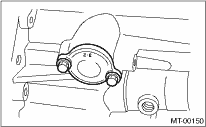
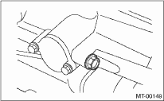

1. Install the reverse check sleeve.
Tightening torque:
6.4 N·m (0.65 kgf-m, 4.7 ft-lb)

2. Install the reverse check ball, reverse accent spring, gasket and plug to transfer case.
Tightening torque:
9.75 N·m (1.0 kgf-m, 7.2 ft-lb)

3. Attach the shifter arm to the transfer case assembly.
4. Install the transfer case together with the extension case assembly. 
5. Install the manual transmission assembly to the vehicle.